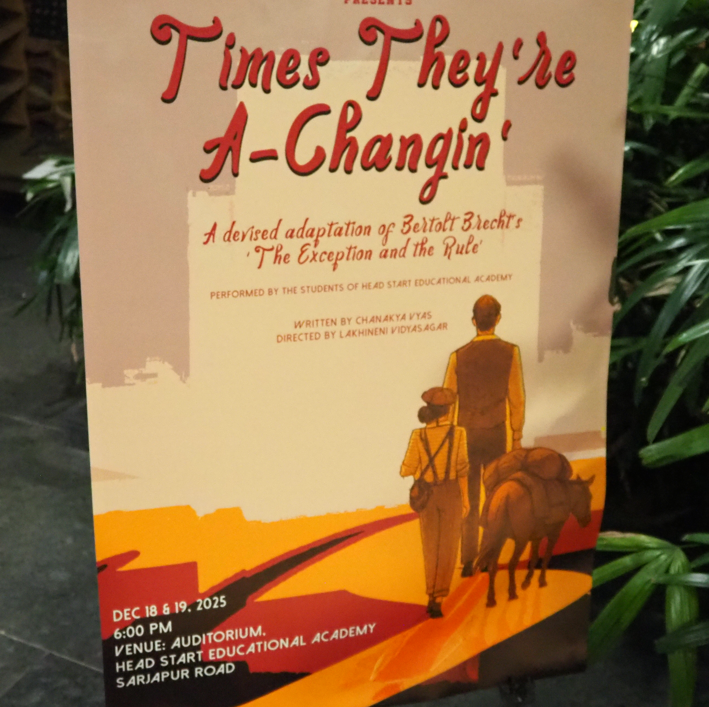
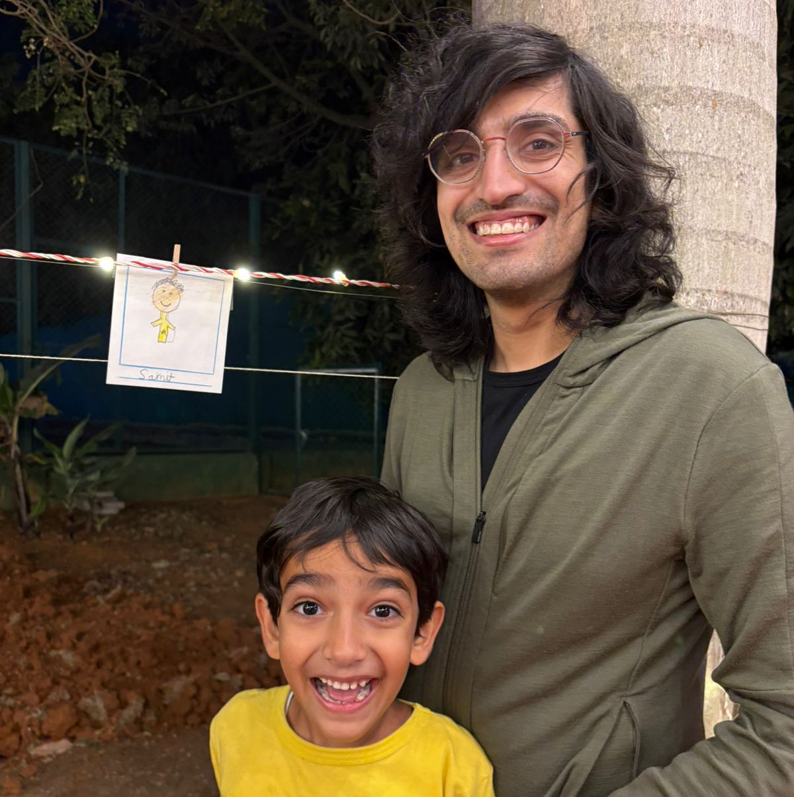

this school play i saw today was the best play i've ever seen. in the wake of asad haider's death (r.i.p.) last week, i was revisting a panel on brecht he joined. he recounted his "greatest pedagogical achievement", where he dispensed any notion of instruction and instead had his students perform brecht's "measures taken". i hadn't seen brecht before, and at my cousin's son's school there was a theater performance of an adaptation, so even just seeing the poster there felt surreal. it seemed like an absurd thing for a school theater to put on- there's so much going on- the fourth wall breaks, multiple actors speaking in unison while portraying a single character, the physical action, didactic social commentary, really my point is just that i was so impressed. most of the rest of this event was probably standard kids cultural day fare. they said no photos during the play unfortunately.
